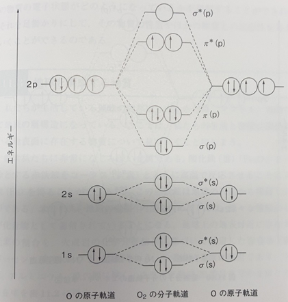
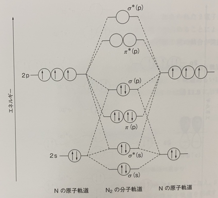

酸素と窒素の分子起動エネルギー準位図
下図には、酸素分子の分子軌道のエネルギー準位を示した。酸素原子は2s軌道と2p軌道を原子価軌道として結合を形成するので,1s軌道は内殻軌道として結合には関与しないと考えてよい。
二つの2s軌道からなる分子軌道は、結合性のσ(s)と反結合性のσ*(s) 軌道を作り、2s軌道の4個の電子が収容される。2s軌道の電子を用いた結合は打ち消し合うことになるので、結合には関与していないと考えてよい。2p軌道を用いた分子軌道では,一組の結合性σ(p)軌道(図 11.8のp-p (σ)に相当する)と二組の結合性π(p) 軌道(図11.8 の p-p (π)に相当する)ができあがる。これら三組の結合性分子軌道に対応する反結合性分 子軌道が,エネルギー的に高い位置に作られる。酸素原子がもっている電子を酸素分子の分子軌道に収容する場合、エネルギーの低い軌道から順に収容されるので、反結合性軌道である二つのπ*(p) 軌道に1個ずつの電子が収容される。ここで,二つのπ* (p) 軌道には対になっていない電子(不対電子)が収容されている。p軌道からなる三つの結合性分子軌道に6個の電子が収容され, 反結合性分子軌道であるπ* (p)軌道に2個の電子が収容されているので,6電子-2電子= 4電子となるため、結合次数は2であり,酸素分子は二重結合をもつ分子であることがわかる。
窒素分子を見てみよう。先に示した酸素の分子軌道と異なる点は、窒素の分子軌道では2p軌道から形成されるσ(p) 軌道はπ (p)軌道よりもエネルギー準位が高くなっていることである。詳細は省略するが、酸素分子では2s軌道と2p軌道のエネルギー差が大きく、これらの軌道間の相互作用は無視できる程度であるのに対し、窒素分子ではこのエネルギー差が小さく,その相互作用が分子軌道のエネルギー準位に大きな影響を与えるためである。分子軌道のエネルギー準位に変化が生じるものの、酸素分子とは異なり、窒素分子では2p軌道から形成される反結合性分子軌道は空であり,さらに,すべての電子は対になって各分子軌道に収容されている。また,2p軌道からなる三つの結合性分子軌道に6個の電子が収容されているので、窒素分子は原子間に三重結合をもつ分子であることがわかる。このことは、ルイス構造による書き方でも分子軌道法を用いた書き方でも理解できる。
窒素は大気中に最も多く含まれる気体であり、融点は-210 ℃で沸点は-196℃である。常温常圧下では極めて安定(不活性)であり、アルゴンなどの貴ガスに比べると安価な気体であるため、嫌気性条件下や乾燥条件下で化学反応を行う場合,不活性ガスとして用いられることが多い。また、液体窒素は安価で比較的安全な冷却剤(寒剤)としても利用されている。
一方、酸素分子は、ルイス構造でも分子軌道法の書き方でも原子間に二重結合をもつ物質であることはわかるが、ルイス構造の書き方では、2個の不対電子を有する物質であると判断することはできない。そのため、電子状態を理解するためには、分子軌道法による解釈が必要である。このように、不対電子を2個有する酸素は、その電子状態から三重項酸素分子と呼ばれる。対を作らない二つの電子はビラジカル(二つラジカルがあること)として存在するため、窒素に比べて高い反応性を示すことになる。酸素の沸点は-183℃であり、気体状態の酸素を液体窒素温度に冷却すると液体の酸素(液体酸素)が得られる。この液体酸素はビラジカルを有していることから常磁性を示し(磁石に引き寄せられる)、薄い青色を呈する液体である。
ある物質とある物質が反応して、既存の結合が切断され新たな結合が生成するためには、電子が関与している。これまでも述べてきたように、その物質の電子状態がどのようになっているかを理解することができれば、それを足掛かりにして,その物質の性質やほかの物質との反応性を考えていくことができるのである。